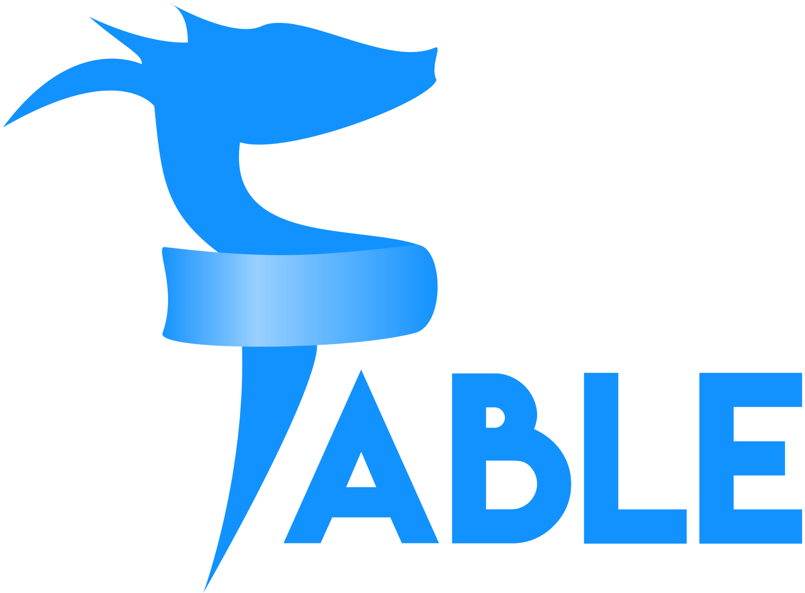

F# on the web:
The SAFE Stack

Agenda
- SAFE
- Demo
- Q&A
SAFE Stack
- What is a 'stack'?
MEAN
- Data store
- Web server
- Client-side UI
- Runtime
LAMP
- Operating System
- HTTP server
- Database
- Client-side
What's a stack?
A set of technologies that explicitly work well together
SAFE Stack
- S - Saturn
Saturn
A modern web framework that focuses on developer productivity, performance, and maintainability
A layer on top of the Giraffe web framework for ASP.Net Core
Saturn, cont.
- Inspired by Elixir's Phoenix framework
- Batteries-Included
- MVC-esque
- Computation-Expression-based for simplicity
- Access to internals for flexibility
SAFE Stack
- A - Azure
Azure
- Microsoft's cloud environment
- Most SAFE samples showcase Azure deployments
- Most are docker-based, and so will deploy anywhere containers are supported
SAFE Stack
- F - Fable
Fable
The compiler that emits JavaScript you can be proud of!
Fable
- A F#-to-JavaScript compiler that supports seamless interop between .Net/F# and JS code
- Allows for F# to be used on both the client and server
- Client-side and serverside (browser and nodejs)
-
Runs on normal Javascript tooling
- webpack
- babel
SAFE Stack
- E - Elmish
Elmish
A library implementation of Elm's famous Model/View/Update(MVU) architecture
Actually independent of any UI library.
Elmish
Implementations exist for
SAFE Stack
- Saturn
- Azure
- Fable
- Elmish
But each part can be switched out independently to best suit your needs
GGFR Stack
- Giraffe
- Google Cloud
- Fable
- React
FAFA Stack
- Freya
- AWS
- Fable
- Angular
Why SAFE?
- F# end-to-end
- Typesafe
- Flexible
- Tested - run as part of Microsoft's .Net Core validation
- Code-sharing (Isomorphic F# :D)
- Rapid Iteration with hot module reloading
Demo
Other Resources
Project Pages
Community links
dotnet CLI templates
Q & A
Thanks for coming!
Slides are at https://baronfel.github.io/austin-meetup-2018-09-20
Check out the Austin F# MeetUp group for more like this.
Help us decide on the next topic!